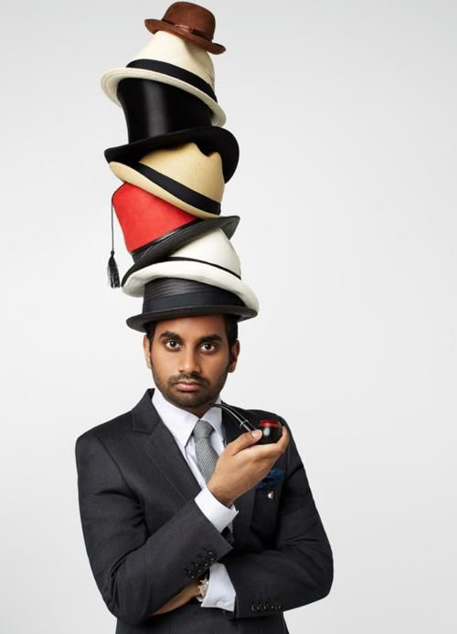

I haven't blogged all year. It got to the point where I was blogging everyday with such controversial posts that my friends and family wanted me to stop.
Telepathic Teddy Bear - Where is My Mind
I've dealt with my share of mental health problems and voicing my opinions online maybe wasn't such a great idea.
I've had time to reflect and I've learned from my mistakes and I am ready to start blogging again. I don't fear my words being used against me in the future because I believe people are entitled to changing their beliefs and shouldn't be condemned for something they said while they were searching for answers.
When I write a blog post on my website, I get better at HTML, CSS, and sometimes JS (programming languages) and I also end up doing graphic design and learning about domain registration and version control. I recently deleted my whole project and then redownloaded it from github and was surprised it worked. I'm basically CEO, Author, Editor, Public Relations Officer, Graphic Designer, Web Developer, front end and backend, Software Engineer, Philosophy, Theologian, Academic, Intellectual, Poet, Songwriter, Game Streamer, Chess Expert, Game Developer, Content Creator. And a lot of those jobs I screw up. A lot of the conclusions I made are wrong even though I believed them at the time of writing them. I'm here now to apologize for what I've already done.
I feel uneasy about what I've said in my /book and my /blog and I'm not so proud of myself and my life as man right now. Calling myself an alpha male was always a questionable decision and I have a long ways to go and I'm not even putting full effort into making it better every day. I feel like I had to do that to stop me from slipping down the path to literally possibly one day changing my gender. I mean that's what it really comes down to, is me rebelling against that idea and trying to regain my sense of masculine self-respect. I haven't liked myself very much lately which is a major change of pace from thinking I'm God's gift to the world sent to save it. When I'm manic that's how I end up thinking. And the truth is, I'm afraid of having another manic episode.
I made a friend who read my book and he said I was a good writer, but I think I was too intense with him and may have pushed him away when I could have really used a friend.
Hopefully with my Elam/Alpha debacle I raised some awareness as to what some men are silently struggling with. There does seem to be an agenda within porn to turn guys into sissies but hey, maybe that's just me, and I'd rather not talk about it anymore. My neck is tired from sticking itself out so far, not to say that I'm a hero. I'm more like an imaginary friend.
I think some conspiracies are true, and a lot of the covid stuff that was happening during the time I was writing have proven true, but I can get way out of line with personal fantasies about who I'm supposed to be. I suppose I should thank the timing of covid with the bulk of my blog because it made me seem like I was onto something. I guess I get carried away thinking about the butterfly effect, and how much one man can really make an impact, even if no one is consciously aware.
I'm in a state of acceptance of who I am and my situation I've earned. I need to take responsibility for my mental health and wellbeing and contribute to society in a constructive way. I need to have more real-world evidence and practicality. I need to find a way to thrive in this world, and that means I need more money. I'm thankful to be back at work, and that they didn't fire me.

If you are a creator, you are up against the very best. If you are reading this right now, I have won your attention temporarily. Compare me to your competition. A Forbes article? A website engineered by Google? It can be disheartening to try to write a novel or whatever it is, because the competition is literally the best of the best. It's like the NBA. Good luck playing basketball for a living. That's how it feels with any truly meaningful work. Do you know what I mean? It takes a lot of courage to go out with your camera and take a picture of landscape and call yourself a photographer when you're up against Ansel Adams. But, "You gotta do what you love, and then if you do that for long enough, then you get good at it, and you eventually make it." - Mr. Beast
I wrote a song recently called, "Sudoku" and added it to my homepage shuffle playlist. You can check it out on /music as well.
This has been an invaluable experience for me because even if you read my stuff and think it's bonkers... the reality is that I am wearing over ten hats on my head and some of them don't fit and fall off. I can't do everything well. It's hard to run a successful website. It's hard to be good at anything. The truth is that I'm just happy to be able to use code to put a real website out into the world and play the game of the internet. I'm not just a reader, I'm a producer of content on the web.
You may not like my topics of choice, or the pictures I choose, or the songs, or the commentary, but you can't deny that I'm putting all the pieces together in a meaningful way. The reality is you couldn't piss people off with a website if you wanted to, because you don't know how.
There are so many hurdles I've jumped over permanently that I never thought I'd be able to, that I'm just thankful I know how to write this post with ease. I fully understand code. I understand what I only once wished to understand. I used this experience to familiarize myself with programming so I could stay sharp enough to one day get a career with coding. It's the little things, you know? The things I would've forgotten or never fully understood without the repetition and meaningfulness wrapped up in creating this website.
But what I really want to be able to do is be smart enough to reprogram whatever robot comes to kill me in the far future, if that day ever comes. idk, I guess after college with a philsopshy degree I decided that coding is what I wanted to get good at. I just need to figure out a way to make money with it. I also need to get better at it too. There is truth in rejection. Rejection by the girl you want, the job you want, and even by God.
I want to stay as humble as I feel right now because I fully acknowledge my own insignificance and magical thinking. I want to be more even-keeled and to just be a better guy. I'm gonna leave you with a song just becaue I can.
If you look at my post below it's pure madness, or at least 95%. I even posted a video of a guy on bitchute who makes videos all day about how he's Jesus. It's really sad how bad I let my mind get, but I'm trying to recover my own sanity.
11.14.23
Infinity, trapped in the Saturn Cube Matrix
See the infinty symbol in that Matrix 4 screenshot? That's on purpose.
Beyonce - Halo
Not going to bother trying to say this video is true, but it does partially resonate with me.
I can point out that many of David Icke's words have proven true over time, and he's infamous for believing in Reptilians but actually makes a ton of sense if you give him a chance.
The guy making the video even shows a short film called code 8 with an actor I love from the movie "These Final Hours", and the drone footage has a triangle and then 117 at the bottom.
Also the halo in my triangle is tied to heaven but also the game Halo with Master Chief as Spartan 117 so it's all synching up in this amazing way.
My book of Elam talks about the connection of Elam and Neo, and this guy in the video is making the case that we are in the matrix right now, and it ties into the hollow earth video I posted below. It's all coming together and making more and more sense to me.
In the Matrix 4 when Neo is fighting the new Agent Smith, also a favorite actor of mine from Mindhunter, and the blonde girl I first loved told me before I was like Holden from Catcher in the Rye. His character's name in Mindhunter was Holden. In that fight, a gold circle is reflecting light off the water and forming the 8 of infinity. The infinity sign. And I view the digit 8 as the symbol for infinity as I've blogged about in /may when I got out of jail and assigned meaning to all 10 digits.
The conflict of Neo and Smith, or Christ and Satan, is infinite and part of the self-learning algorithm of God in my theories.
Elam vs. Elon is the best I can come up with in terms of the Antichrist right now. The Christ was not Jesus's birthname but was given to him. He earned it for being the annointed one. As I've shown in my book, Elam and Neo are connected. Neo Anderson can be translated to the New Son of Man, because "neo" means "new" and "ander" means "man" like the word neanderthals. Neo's ship is called the Nebuchadnezzar which is straight out of the Holy Bible. Not only that, but in researching Elam I just discovered "Elam's military ascendancy ended, however, with the renewal of Babylonian power during the reign of Nebuchadnezzar I (1125-1104 B.C.E.)" "Matrix" is written all over the treadmills I see at Gold's Gym. The problems I had in my Google and Meta interviews were considered "Matrix" problems which are arrays within arrays. My only way out of this Matrix may be to lean into that Matrix excercise equipment and solve those Matrix problems to get an actually good job and create my empire of Cloudland, as a ripped Elam.
It's interesting as well that in my article called infoverse I suggested how a forcefield would be developed to stop incoming attacks. I've experimented with my thoughts and devoted hours to trying to think of a way to invent a forcefield. Neo's main power in the Matrix 4 is to block attacks with his forcefield and I believe that's my best power as well if I have any because I've actually devoted my mind to thinking about it as a realistic possibility. I've also written a song about flying. I've also flown in my lucid dreams.
Today I was reading 12 rules for Life by Jordan Peterson and one of the rules is to set your house in perfect order before you criticize the world. I aim to do that. He also shared a brilliant quote from Carl Jung that, "A tree cannot grow to Heaven unless it's roots go all the way to Hell". And that to me means you have to know your own capacity for evil before you can know your capacity for good, and they stretch together, like Smith and Neo's powers balancing out the equation. Look at the upside down crosses artwork I was drawn to on /motivation and see my brush with evil. The artist is named Eli and I found him while looking for aliens for my dj aliens music app. He said I could use his artwork after I stole it and told him about it, but he asked me to ask next time. The Book of Elam might not exist if not for the movie "The Book of Eli", and my website wouldn't be the same without Eli's artwork. I'm telling you, when you come up with your own meaning from your own life and create your own symbols and give yourself a number shape and colour , magic starts to happen. Look at when I blogged about my symbol appearing in my favorite show the Peripheral last month. And this video above I posted before I even saw the triangle and the 117. And my guardian angel's apartment number is 117. You can't make this stuff up. I even broke up with a girlfriend who had a strange connection to the Lilith that the bitchute video talks about. Don't underestimate your own magical ability and then watch what happens when you're paying attention. The eye is a divine sign and JP talks about that as well, and there is the story of Horus, a precursor to Christ, who fought Set and lost an eye. The one eye symbolism of the illuminati is evident on my true love's soundcloud picture and she's showing one eye. Also her favorite word was "Naughty" and it's illuminaughty. If Love is what matters I have to pay attention to who I loved and how it relates to my journey. Even though she is married to someone else, notice how Trinity is married in the Matrix Resurrections even though she loves Neo deep down. I believe she wouldn't be able to look me in the eye and tell me she doesn't love me, but I'm also aware that this could be my mental illness and my ego trying to protect itself. I would simply like to have coffee with her one time and see if she can look at me and say she doesn't love me. Trinity, is of course a reference to the Holy Trinity. Notice how I quickly destroy the illuminati in my book. Also notice how my chapters are in Binary, and the game that Neo is working on as a game designer in the Matrix is called Binary, and Smith is talking about Binary during their fight with the infinity sign. My greatest moment of my life I call the "Matrix blowjob" because I got the best head ever after I showed her the Matrix after she showed me the Notebook and if you put those two together it's about love, and memory loss. This is why I posited that she had my memory erased and created the illuminati. Max and Ali both mean the greatest because Max means maximum and Muhammad Ali was the Greatest of all time. The prophet Muhammad and the prophet Elam. I'm just trying to connect the dots and parse out the meaning in this life even Tolstoy found devoid of meaning. If that makes me crazy than so be it. The ones who are crazy enough to think they can change the world are the ones that do. Maxwell literally means the highest good, whether you like it or not. Matrix is a combination of Max and Tri, and it's a trick on Max, she's my Trinity. You can view it in iMax or on HBO Max or try watching Good Will Hunting by Miramax. And I was named after Maxwell Smart, so don't you dare call me stupid. I would eviscerate anyone in a debate. It'd be like Eminem in a rap battle. 8 mile would mean the infinite journey, I imagine, and my favorite song by him is My Darling. If me and my darling got back together, like in the ending of Matrix 4 when Trinity chooses Neo over her husband, it would prove that true love is real. And if it doesn't exist, I may want to spread the seed of Elam. Realistically, though I should probably just get a girlfriend. I still have a lot to learn about women, love, and family and I'm willing to fall back in love with someone new.
Peterson writes that Christ took personal responsibility for the sins of mankind because he knew his own capacity for depravity, and therefore also knew Heaven at the other end of that.
In the The Book of Elam I say Nietzsche had the best critique of Christianity but actually Jordan Peterson's analysis of the discovery of time by man creating the idea of God is a brilliant athiest explanation of the belief in God. When I'm finished with his book I will refute it.
In regards to the Saturn Cube, I've also blogged about the significance of the Black Cube and the worship of that by Islam and it's connection to the black box problem of computer science philosophy and time travel. All of my theories are coming together. My favorite things I love are helping me put the pieces together, because Adampants taught me to focus on what makes me me to stay on my path of truth, and not to get thrown off my path. Even JP talks about how our interests choose us, and not the other way around, and how that connects to God and Fate. This is all very exciting and I'm so happy to have everything making so much sense to me, even if I can't accurately articulate it yet.
Notice how the game is called "Infinite" and how that ties into everything I'm saying. That's me simply going to get a halo picture and noticing yet another synchronicity from God.
The truth is stranger than fiction. And I can go on infinitely because my knowledge comes from within. Like Eminem said in his first single, "I'm infinite, you heard of hell well I was sent from it" except I was sent from Heaven. When I just googled "Elam name" I got, "Meaning:Forever; Eternal; Tree. Elam is a boy's name of Hebrew origin. This title, meaning “forever” or “eternal,” could inspire your little one's spirituality through the infinite promise and hope in the world. In the Christian Bible, this is the name given to the grandson of Noah." Notice Carl Jung's tree quote I mentioned above about stretching to heaven with roots to hell. I'm Elam. I'm infinite. You heard of Heaven, I was sent from it.
Today I'm going to get a crystal from Ancient Elam called "Lapis-Lazuli" and guess what the crystal store is called closest to me? Matrix Energy Healing Center.
11.30.22 - 12.2.22
Elam (Post of the Month)
Played in my first chess tournament last night. I'm putting myself out there more in life, going after the things I want.
G Eazy has a line in his remix of this song saying, "I see what I like and I go and I get it."
That's what I'm doing. I'm working harder and seeing the results.
I had a great day today in the rain with a girl I like. Life's good.
Earlier this morning I was watching the documentary Kyrie got suspended for. It turns out Jesus might be black. I'm cool with that. The documentary said "Elam" a bunch and it's in the Bible as a son of Shem, descendent of Abraham and Noah, but also Elam was a place I think near Iran or Iraq.
The funny thing is, I know almost no one will believe me, but when I first came up with the name Elam, male spelled backwards, I checked the bible and there were no references. I checked the internet and there was nothing.. no wikipedia page. Now there's all sorts of stuff. The bible says Elam multiple times. There's maps of it. There are Elamite warriors and artifacts. I think it's theoretically possible that the past can be affected by the present. Don't believe me? Read what this PHD has to say on the subject Retrocausality. It's a great article on Medium about Free Will and Quantum Mechanics.
Who is Elam? It's me. It's who I want to be. It's like in the Matrix when Neo is Thomas Anderson's hacker name. Neo is the one, and can move faster than any agent because he's more powerful than the rules of the simulation. Agent Smith, the antagonist, is constantly calling Neo Mr. Anderson, trying to rob Neo of his newfound strength and identity, and trying to shackle him to the rules of that world so he can be beaten. Neo wins by not playing by the Matrix's rules. I intend to win by playing with my own rules as Elam. Elam is how I imagine my best self. I want to be a man who can start a movement, lead a revolution, or bring people the truth. I want to expose lies, bring people to Christ, but also to develop healthy sex lives. I want to help people sort through the confusion and deception and discover their true selves that God designed them to be. I honestly want to start a church, but it would be nothing like the stuffy churches I've seen. I want to address the elephant in the room -- that we are slaves. Like in the Matrix when Morpheus tells Neo when Neo asks, "What truth?" . "That you are a slave, Neo.". I really like the newest Matrix movie, by the way. I think it does an excellent job showing how mentall illness can be used to dismiss people's inner truth. "Don't Worry, Darling" shows that as well when the girl in the simulation knows something is wrong with her life. The truth is we are slaves and we are oppressed by the satanic control structure that rules here. God is so good that life goes on, but make no mistake, this is a trap. The whole monetary system, voting system, academia, all of it. It's controlled by the Illuminati and I want to have a church that actually addresses that because Jesus said the Devil would trick the whole world, and Christian pastors don't call out the truth that 9/11 was an inside job and all these events are orchestrated attacks by a Satanic cult.
Jesus also said you would be persecuted for your beliefs if you followed him. But what kind of persecution does the average Christian going to church face? Almost none. Unless you're willing to stick your neck out on the line and say the Earth is flat, or 911 was an inside job, or we didn't go to the moon in 1969, or covid was made in a lab on purpose to gain control and inject millions with hazardous genetic engineering, then you'll know nothing about persecution and you'll know nothing about God.
I've put my life on the line for Jesus. And all his words have come true. I think it's good to have a personal relationship with Him, and not be scared away by dogma. The bottom line is that God became flesh and was Jesus. Think about what Jesus did when he was alive. He called out the churches and religious leaders of his time. He didn't sit in church like a good Christian does today. Jesus was not obedient. He was defiant. He was cool. He was powerful. He was Elam, or what "Elam" means to me. "El" means God and am is am so Elam translates to "am God" He was noble. He was hated. He was conspired against, betrayed, humiliated, and killed. Then he was resurrected. Now he has the keys to Hades, and all you have to do is get on good terms with Him, however you define that. You can start by treating others how you want to be treated, or learning about his other lessons, like when he said, "Let thou without sin cast the first stone" to a group of people about to stone an adultress. The important thing to understand is that for True Christians the Earth is not our home, heaven is. We aren't supposed to like the way things are done here. We're supposed to keep the faith. He has prepared a spot for us in Heaven. He's given us free will. You can still make it into heaven you have to just follow the truth and join God's team. Most people will choose the Devil or be tricked into choosing to be on the Devil's team. Jesus knows that without him you are lost. He knows that if you try to be agnostic the devil will ensnare you, whether you believe in him or not. The devil prefers you to not even notice what he's doing to your soul.
I want to live in God's kingdom, serve in God's army, learn in God's school, and go to God's church. The Earth is clearly in need of correction. I view this life as God's school, and I have learned many lessons that have brought me closer to God and who I'm supposed to be. I view this blog as serving in God's army, spreading the truth. I view God's church as following my intuition and going wherever God takes me, following my passions and developing my skills. I view God's kingdom as Heaven, and I try to store up my treasure there moreso than on Earth. Jesus says thiefs can come and steal your Earthly wealth, but not in Heaven. Jesus also said that "wherever your treasure is, there your heart will be also." . He also said you need to bind the strong man before stealing from his house. That is what the Illuminati is trying to do to men in my opinion. They are binding us with porn, drugs, and endless entertainment. They hide our greatness from us. They don't want us to realize our true potential. They don't want women to see their unbelievable loving value. They don't want us to see how magical we are. You can heal yourself just by thinking you took medicine when you only took a placebo. You can affect the past, present, and future. You can manifest what you want. You can be truly happy by being true to yourself and not letting this world bring you down. They tell us a false story and a false history and give us false news all to tear us away from finding out who we really are. We are the children of God. We are the chosen ones. We are the elect. We have a choice, to remain tethered to the strife of this world, and never have our thirst quenched, or we can accept that there is another place for us we are meant to stay and that is Heaven and we need to earn our way in by following the example God gave us with his only son Jesus.
Matthew 11:28 “Come to me, all you who are weary and burdened, and I will give you rest. Take my yoke upon you and learn from me, for I am gentle and humble in heart, and you will find rest for your souls. For my yoke is easy and my burden is light.”
Matthew 6:21 For where your treasure is, there your heart will be also.
The single greatest truth that is hidden from you is that God loves you. He forgives you if you repent. He understands you better than anyone. He made you. If we know we are loved by God, we are bold as a lion. We are free to be ourselves and let our individuality shine through.
John 3:19-21 King James Version (KJV)
And this is the condemnation, that light is come into the world, and men loved darkness rather than light, because their deeds were evil. For every one that doeth evil hateth the light, neither cometh to the light, lest his deeds should be reproved. But he that doeth truth cometh to the light, that his deeds may be made manifest, that they are wrought in God.
John 3:19-21 New Century Version (NCV)
They are judged by this fact: The Light has come into the world, but they did not want light. They wanted darkness, because they were doing evil things. All who do evil hate the light and will not come to the light, because it will show all the evil things they do. But those who follow the true way come to the light, and it shows that the things they do were done through God.”
Jesus is the light of the world. God came into the world as Jesus and exchanged his crown in Heaven for a crown of thorns. We are only judged by God if we ignore this light he has given us.
John 8:12
Then spake Jesus again unto them, saying, I am the light of the world: he that followeth me shall not walk in darkness, but shall have the light of life.
Jesus was all about worshiping and thanking his Heavenly father. He said he got all his power from Him, and we can do the same if we have faith the size of a mustard seed.
Matthew 17:20 And Jesus said unto them, Because of your unbelief: for verily I say unto you, If ye have faith as a grain of mustard seed, ye shall say unto this mountain, Remove hence to yonder place; and it shall remove; and nothing shall be impossible unto you.
The Devil tries to get you to love and worship creations rather than the Creator.
God loves even the Devil, for nothing can exist without God's love, because God created everything out of love.
This is a great channel on bitchute of what I would call a Christian Conspiracy Theory. Those resonate with me the most because it allows you to explore the darkness of the world while keeping the light of the world in mind. The channel is "Face like the Sun".
11.30.22
A Billion Wicked Thoughts
Google engineers researched all the pornagraphic searches by females and found out that they search for literary stories of a young attractive female seducing and taming an aggressive, dominant and dangerous male.
I've actually never seen a more succint, accurate and interesting video about what women want. Analysis by Jordan Peterson.
Check out this article I wrote last year about quantum entanglement and simulation theory
I went to Church
I went to church today at 9:00am because God has been on my mind and I want to connect with other Christians.
I donated a couple toys to the toy drive at Calvary church. The sermon was good and inspired me to do so.
The sermon was about Love and that verse in Corintians where it says.
If I speak in the tongues of men or of angels, but do not have love, I am only a resounding gong or a clanging cymbal.
I feel like I have been a clanging cymbal. I want to have love. I want to be in love. Porn has made it very difficult to have real success with women. This woman in the video does a great job explaining how viewing porn tricks our male brain into thinking we are the alpha male because we're seeing all these hot naked women. Who is more tricked than me?
I know that when I shut out porn I am forced to improve my real life, but it's difficult to stay away from.
My roommate avoids porn, and practices long-term semen retention. He's a conspiracy theorist too and I think I might have to try semen retention but it's so hard to do.
The pastor talked about disagreeing with people without disparaging them or condescending them. That's something I also want to focus on and improve on.
Wish me luck on my quest to slay this porn dragon.
God Bless, Elam
11.27.22
Next on the Illuminati Agenda
There appears to be a push to stop climate change. This, like all their tricks, is not a benevolent attempt to help you.
The climate change narrative is that we have to stop our carbon footprint. You are organic life that is carbon-based. The food you eat causes carbon emissions. We are under attack. They are pushing the eating of bugs.
These sick fucks may want us to eat bugs instead of meat to "save our planet". They don't give a fuck about our planet and our planet is not what you've been told.
It's almost like they are not even human, the beings behind this agenda. These demons or aliens are trying to enslave us and wipe us out.
When I wrote the Book of Elam I had a dream that night of a big grey alien, covered in blood and dripping blood, more red than grey from the blood, chasing me and eating people and even a horse as I was just getting around the corner. I'll make a youtube video describing the dream. It was my scariest dream ever, and kind of out of the blue, except for one alien abduction horror movie I watched a month ago with some guys who believe in aliens.
The timing of it was strange though, as if they didn't like my book.
I don't talk about aliens often because I don't know what's really going on, but I find truth in Jesus. He is the demonslayer and they all have to listen to him.
One theory of the Greys is that they are future humans. And maybe like in the show the Peripheral these future humans have gone back in time to here to run things.
It really comes down to Jesus. I can't seem to live up to his lofty standards but I do think he's the king of kings.
Human beings seem to be under attack by something. I don't think it's as simple us some of us being selfish. We are wrestling against spiritual wickedness in high places, like the bible says.
All the famous people take photos with illuminati gestures and I'll never be able to let that go and give these celebrities a pass.
They will use any excuse they can to continue to degrade us and enslave us. Climate change is just a tool for them to enact ludicrous policies that make our lives worse.
In the meantime, I'm having a pretty good time. I'm pretty happy. I'm just keeping a watchful eye on their plans. I don't like Andrew Tate, but theres a good video of him talking about the people who were used to push the mask agenda during covid, and where are they now? He says they have a slave mentality, and aren't even sentient enough to apologize or admit they were used for an agenda.
History will always prove me right. That's one of the reasons I write this all down. It's not like I was wrong about the vaccine when they said it was safe and effective and would stop transmission. It didn't stop transmission. Everything I've been saying on here for 2 years has been becoming more and more plausible if you open your eyes.
11.26.22
Strength in Weakness
I've been playing basketball the past couple weekends and it's really fun to get back out there and score some points.
I'm pretty happy with my performance today as well as my endurance.
It definitely helps round me out as a person to be able to use my physical body to compete instead of just my mind with chess. It makes me happy because I love basketball but also because it's helping me reach my fitness goals and get the right body for the rise of Elam.
My plan is to take a nice picture with my shirt off once I get into shape and caption it Elam.
But at the same time, I love this song's chorus saying, "I'm weak, and what's wrong with that?". I think it reminds me that it's okay to slip up sometimes on my quest of manhood. It's okay to have fun and love everything, even my own moments of weakness.
I don't want to take myself too seriously, I just want to have direction in my life as Elam.
As long as I'm making progress it's okay to slip up now and then. I try not to watch porn but I forgive myself for a little bit on online activity.
I even started creating my own slideshows using my meme creator
I was going to upload it to a porn site but it turns out there's a decent amount of red tape for uploads. I wanted to make a genre of porn where it's positive thinking for guys and male encouragement to get out there in the real world.
As long as I haven't given up with real women, I think it's okay to look at girls on instagram or the internet.
I'm happy with my progress and I had a crazy week at work with Black Friday at Best buy.
I think it's important to be able to take a punch in life and roll with the punches. Be like water. But my water is a steady current right now, and every day I become more like Elam, my ideal self.
I'm loving these youtube shorts. I try not to spend too much time on it but I've been working hard and think it's okay to indulge some. Here's a nasty eminem freestyle. I tell people Elam to me is like Slim Shady to Eminem.
11.26.22
Doodad
The Peripheral, episode 7, was incredible.
This is my favorite show ever, and I've known that since episode one.
It's getting better and better.
I don't want to spoil it but you've got to watch it.
11.25.22
When Elam met Focus
At my job there is a man who goes by the name of Focus.
We were closing the store together and got to talking, and he said he couldn't wait to get home to his women.
It turns out he has 2 wives, which I think is awesome. They're both pretty.
Then I told him I was Elam, and we starting connecting some more.
He talked about his "red pill" philosophy which is about men but also a reference to the Matrix, and the pill you take to see the truth.
After that he told me he thought 9/11 was an inside job. At that point I was ecstatic to tell him he's not alone and I think that too. I told him about my website and my book.
We have some differing viewpoints on Christianity but at the end of the conversation we were pretty much identical. We believe Heaven and Hell are within ourselves and we have power in this life to make it happen. I'm not banking on an afterlife. I'm using what God gave me.
We also agreed that Jesus was like God the programmer putting himself as a character in our game of a simulation.
He also encouraged me to go by the name of Elam.
I think he's such a cool guy and I actually admire and respect him which is so rare. He actually has a life I want because it's a unique and powerful way of living as a man.
Two wives is the way to go, one wife is just a compromise a man makes. I honestly want 7, one for each day of the week. I still think it's theoretically possible to be satisfied by one woman, and to be in love.
I need a mentor and I respect that this guy has a following of men who want to learn how to be more of a man.
I desire to be more of a man, and that's what Elam is all about. I can't wait to learn from this man more and maybe even do a podcast with him and become better friends.
It's such a beautiful thing to truly put yourself out there and then be able to meet someone so authentically themselves as well and connect on so many levels simultaneously.
He earned the name Focus by someone saying they'd never seen so much focus and that he should call himself that. I earned the name Elam by analyzing the Illuminati attack against manhood and trying to counter it by becoming the epitome of who they were trying to eliminate.
He had never met anyone who agreed with him about 9/11 before and I'm so happy to be that person for him. It can be hard and feel lonely, but he's sure of himself and so am I. We know the truth. We are white blood cells. He's black; I'm white, but functionally we're the same type of being. We see the illness of this world and call it like it is. Our job and our design is not like the red blood cells who are blissfully unaware.
God bless everyone, I'm so happy I met this man. He recognizes like I do that we have the powers of Gods. We can affirm and manifest who we are into this realm.
I can't remember the last time I was truly this excited to live the rest of my life. He told me you have to know who you are, before you can make progress. I know who I am. I am Elam. I will continue to live up to that name until it becomes manifest.
I think I found my equal. A truly original being. I am blown away. The secret army I'm trying to raise? He's the perfect soldier, and I would fight for him if he asked me. I gave him a ride home, and I'm thrilled to be his ally in this spiritual war.
I want to recruit men to choose their own name, and to break free from the Matrix. He already is free. His mind is literally free enough to have 2 women happily at home waiting for him, and for his nametag at work to say Focus. He's ahead of the game, ahead of me, with more followers than me. I am just blessed to have run into him at the right time when I was feeling a little alone. I think God is real and meant for this joining of forces. His instagram is bigofocus. "Our deepest fear is not that we are inadequate, but that we are powerful beyond measure. There is nothing enlightened about shrinking down so other people feel better. We should let our light shine, to give others courage to do the same." Thank you, Focus, for your courage.
Elam out.
11.23.22
Cognitive Dissonance
I've been looking forward to this documentary called Died Suddenly, however I was disappointed by it. It was far too gruesome and showed dead bodies and I just can't share it on my blog in good conscious because I think it harms those who watch it.
It's about the massive increase in sudden unexplained death for ages 16-49 since the covid jabs.
It's disturbing to watch because it shows embalmers taking out the strange white fiborous blood clots in the victims postmortem.
The truth can be extremely disturbing and it's not fun to watch this stuff. I wish I hadn't. I did it to stay informed because it's necessary for me to do my research, no matter how uncomfortable it is. I don't get paid for this, and it doesn't make me popular. Jesus said you give up your life to follow him in order to be saved. You don't get to follow Jesus and the truth and keep your old life too. Too many Christians don't understand the conflict Jesus demands and predicts. He said it would turn father against son, and so forth. He didn't say the truth would be easy. He didn't say humanity would figure out how to prosper without him, I think he said they would descend into wickedness and he'd have to come back. His predictions all come true.
I can't think of a stronger case of cognitive dissonance than people who are confronted with information that the jab could be harmful, and are fully or even partially vaccinated. 9/11 was bad enough with people holding onto their worldview, but this is way more insurmountable as a truther.
Luckily I am not alone. I know there are still some unvaccinated people who can see what I can see. I would say less than half of the unvaccinated even understand the danger.
This documentary shows evidence that there is a depopulation agenda underway.
My book of Elam is a little extreme, saying that I'm going to be the savior, however, I don't see anyone else offering a solution. I'm trying to build a way out of this mess. After rereading the book of revelations, I can say that I'm defintely not the second coming of Christ.
Jesus said to those who have a lot, more will be given, and those who have a little, more will be taken away. It's known as the Matthew principle and holds true in science as well as finances. The middle class is shrinking and we have wealth conglomerating into fewer and fewer hands. If you extropolate this system further down the line you will see the need for Cloudland and a new system.
I believe in conquering myself before conquering my environment, and I'm still working on myself. But I'm glad I wrote that book. Elam wrote that book with fervour and self-confidence.
But I'm also Max, who has one foot in reality so I can live here. I am able to peacefully interact with people. I just think we need a savior and I'd like to try to become that until Jesus returns. For now, I'm just a writer with some ideas on how the world works, or doesn't work, and what I think the solution is.
God bless you very much.
-Elam.
The fact is, people are dying or have been injured by this jab, and it angers me. I won't let it go because it's too serious of an issue to dismiss. This tragedy has motivated me to live up to the name Elam. I've been improving my physique. I'm not obsessed with this conspiracy, I'm just aware of it, and I am doing something about it.
God's ways are higher than our ways, and I see great knowledge, wisdom, and intelligence behind some of the words in the bible, and I fear they may be true and that I have disobeyed God. Luckily for us, Jesus paid for our sins and we still have a chance to get into Heaven.
1 Corinthians 1:27 But God hath chosen the foolish things of the world to confound the wise; and God hath chosen the weak things of the world to confound the things which are mighty;
Even if there is no Heaven, I still think this is the right thing to do in this life. I'm okay with dying. I don't need to live forever. I just want to be a good man. Jesus said, "the kingdom of heaven is at hand" when he was here. He is a real person I don't fully know or understand. He really was resurrected and The Case for Christ shows that it is a reliable historical fact. I just want people to know that behind all this bad news I talk about with conspiracies and the Illuminati, there is the Good News of salvation with Jesus Christ. Amen.
I'm not done learning about Him, I don't have it all figured out, but I know that there is really something to this Jesus guy, and there is power in the name Elam.
In the book of Revelations there is the day of judgment where Jesus reads from The Book of Life and everyone gives an account of themselves to God. I think this story is the most fair way for all of this to go, and I believe in a just God who will do away with the evil here.
11.23.22
The Case for Christ
I finally saw this movie and I liked it. It's about an atheist reporter who sets out to debunk Christianity and ends up becoming a believer.
In my book I talked about how the truth leads to Jesus and this movie does a good job showing that. I also am an athiest turned Christian. One of the first books I read was The God Delusion by Richard Dawkins. I liked how atheists viewed the world in a way that made sense by actually using their reason.
However, this movie shows how the main character is closed minded when it comes to religion. I don't think that's without reason. I think there are religious zealots who don't use reason and are dangerous. I do understand athiesm's desire to do away with religion in attempt to get rid of irrational behavior. But as an intellectual looking at the whole thing honestly, I think Christianity makes the most sense. I also think that the truth doesn't have to be complex. I think both simplicity and complexity lead to Christ. The protagonist in this story chooses the complex route, exhaustively examining historical accounts of Christ's resurrection, but I also think a just God would make the truth easy enough for a child or a low IQ person to grasp.
These puny rationalists who need hard evidence for everything are never going to glimpse the whole picture. And the instinctual belief in God isn't going anywhere.
By the end of the movie this guy, who's been a dick to his wife for becoming a Christian, finally gets on his knees and says a real prayer.
I've been hard on organized Christianity because I believe the devil has infiltrated the churches to turn people away from God. Just look at all the pedophilia in the catholic church for a clue as to what those guys really believe in. However, I should probably give church another try.
I have so much lust in my heart it's hard to imagine myself satisfied with a wife but I think the family unit is under attack and the best way to fight that may be to make a family myself.
I think I let my devilish ways infect my book of Elam but I get frustrated that nudity is associated with the devil when God invented it and it's nice and I should be allowed to show boobs and talk about God at the same time. But maybe I'm wrong. People are more than their flesh and I do believe in the spirit and the soul.
I wish I had talked more about love in my book. I want to be in love. I was in love and I got burned really badly by it but it was a beautiful phenomenon.
I'm against settling and it's been very hard to commit to anyone after my first because my instinct was to choose my first carefully and I kind of was screwed when she left because then I felt like I lost my chance at a perfectly pure sex life. However, I do believe in God and that he has a plan for me and so I want to find an even better match for me and make a family that believes in Jesus.
I am concerned about bringing a kid into this world and how I'm going to pay for a family but maybe God will take care of me if I behave correctly. I'm happy I know the Good News. I feel like people are spreading the Good News like it's bad news and it's a list of restrictions. That's not what God's about. I think God is about the power you get from believing in him, and the miracles he can perform in your own life. God is about going with the flow, and also letting go. God is about appreciation for life itself.
I also want to say that my path to Jesus was through conspiracy research and atheism, but that's not everyone's path. I think it's possible to get saved without uncovering the mysteries of reality that I believe I've uncovered. In The Book of Elam I say sermons are worthless that don't address the elephant in the room which is the New World Order and the Illuminati rigged system controlling the planet, but maybe not everyone is ready to hear that and it's still okay to learn about God at your own pace. That's the whiteBloodCell's path to God, but it's not the redBloodCells.
My book is written, and I'm going to let it stand. I don't want to be rewriting it still or it'd be a neverending process. Maybe I will try again later, but for now I've printed a version of it and I'll just leave it as is.
I don't think anyone can say that I'm not honest. I was telling some important truths because I want men to know they're not alone. But I also think I may have crossed a line on decency. I certainly know nothing about being a father. I think I have a lot to learn and lots of room to grow spiritually and a gap to close between me and Jesus. I am nowhere near the second coming of Christ, but I think I made some good points about trying to be the best we can be and believing in ourselves and our gifts from God, instead of waiting for God to save us.
I'm figuring this out as I go and I'm proud of myself for trying. I'm growing. I'm getting better. Writing that book was a very humbling experience because now I'm self-conscious of it and wish I wrote it better. I think God loves me and forgives me and I still believe Elam has a place with Him and that He'll be able to explain it to me in Heaven one day.
God bless
At the end of the day, it's just a book.
It's funnny how scripture pops into my head and supports certain conclusions I make. For example I just said simplicity or complexity both lead to God, but it's the people in the middle who are succeptible to the devil. People who are too smart to believe in religion, but not smart enough or diligent enough to see that Jesus really is the King. They follow their reason enough to get away from God, but they don't follow their reason all the way back to him in the end. To put it simply, I'm suggesting that the world's stupidest person, and smartest person, both believe in God. Now listen to this verse from the book of Revelations:
Revelation 3:16 So then because thou art lukewarm, and neither cold nor hot, I will spue thee out of my mouth.
11.22.22
Dave Chapelle
Hilarious stand up from Dave on SNL about Kanye and Kyrie.
11.22.22
Chess is Sexy
Very cool picture. Soccer stars Lionel Messi and Christiano Ronaldo playing chess.
It's cool being a chess player because I spent so many years getting as good as I can at the game and now it's popularity is increasing.
With the Queen's Gambit on Netflix, and the cheating scandal with Hans and Magnus, and now this.. chess might be at an all time high in popularity. Check out /chess for my tutorials, and let me know if you want an online private lesson.
11.19.22
Audiobook
Made an audiobook version for youtube and /audiobook
11.18.22
WBC
Someone bought my book! I'm going to make some new clothes and then I want to update my /shop to include merch like Mr. Beast
I made a Kyrie Irving highlight video with Kanye West music like I said I wanted to in The Book of Elam
I'm extremely frustrated that I cannot properly format this video I just edited onto this blog. Click on Kyrie to view the clip and I apologize if you're on your phone and it doesn't format correctly.
11.17.22
Asha
"If you don't have a plan you'll become part of somebody elses."
I'm happy I have a plan. I added a shoutout to Asha in my book of Elam.
Love this song by 21 pilots.
It's about how the car radio can stop you from pondering your own existence while driving.
11.16.22
JP
I owe a lot to Jordan Peterson and I give him partial credit for giving me the direction in life that led me to writing my book.
He talks about living up to your potential and how great it would be if someone actually did. It really inspires me.
He also speaks to the value and seriousness of telling the truth.
Listening to these videos this morning is like reaffirming that what I'm doing is noble and a just pursuit.
I think the BOOK of Elam is rather honest and I credit him partially for that. I would love to discuss my book with Jordan Peterson one day because I'm sure he would admire and agree with some of it, but also be able to refute other parts of it. I think I'm young to know what I know. "Too soon old, too late wise" is an expression that I tried to avoid in my life because I chose to major in philosophy so I would have wisdom for the rest of my life.
I won my first chess tournament last night and took home first prize. I even met a couple women. Life is going good because I feel aligned with my purpose. I hit the gym this morning and got a good workout in. I am happy.
11.15.22
Church
Video about my last blog post and my thoughts on church
Also, here is the type of warrior I am.
11.9.22
Elam
Played in my first chess tournament last night. I'm putting myself out there more in life, going after the things I want.
G Eazy has a line in his remix of this song saying, "I see what I like and I go and I get it."
That's what I'm doing. I'm working harder and seeing the results.
I had a great day today in the rain with a girl I like. Life's good.
Earlier this morning I was watching the documentary Kyrie got suspended for. It turns out Jesus might be black. I'm cool with that. The documentary said "Elam" a bunch and it's in the Bible as a son of Shem, descendent of Abraham and Noah, but also Elam was a place I think near Iran or Iraq.
The funny thing is, I know almost no one will believe me, but when I first came up with the name Elam, male spelled backwards, I checked the bible and there were no references. I checked the internet and there was nothing.. no wikipedia page. Now there's all sorts of stuff. The bible says Elam multiple times. There's maps of it. There are Elamite warriors and artifacts. I think it's theoretically possible that the past can be affected by the present. Don't believe me? Read what this PHD has to say on the subject Retrocausality. It's a great article on Medium about Free Will and Quantum Mechanics.
Who is Elam? It's me. It's who I want to be. It's like in the Matrix when Neo is Thomas Anderson's hacker name. Neo is the one, and can move faster than any agent because he's more powerful than the rules of the simulation. Agent Smith, the antagonist, is constantly calling Neo Mr. Anderson, trying to rob Neo of his newfound strength and identity, and trying to shackle him to the rules of that world so he can be beaten. Neo wins by not playing by the Matrix's rules. I intend to win by playing with my own rules as Elam. Elam is how I imagine my best self. I want to be a man who can start a movement, lead a revolution, or bring people the truth. I want to expose lies, bring people to Christ, but also to develop healthy sex lives. I want to help people sort through the confusion and deception and discover their true selves that God designed them to be. I honestly want to start a church, but it would be nothing like the stuffy churches I've seen. I want to address the elephant in the room -- that we are slaves. Like in the Matrix when Morpheus tells Neo when Neo asks, "What truth?" . "That you are a slave, Neo.". I really like the newest Matrix movie, by the way. I think it does an excellent job showing how mentall illness can be used to dismiss people's inner truth. "Don't Worry, Darling" shows that as well when the girl in the simulation knows something is wrong with her life. The truth is we are slaves and we are oppressed by the satanic control structure that rules here. God is so good that life goes on, but make no mistake, this is a trap. The whole monetary system, voting system, academia, all of it. It's controlled by the Illuminati and I want to have a church that actually addresses that because Jesus said the Devil would trick the whole world, and Christian pastors don't call out the truth that 9/11 was an inside job and all these events are orchestrated attacks by a Satanic cult.
Jesus also said you would be persecuted for your beliefs if you followed him. But what kind of persecution does the average Christian going to church face? Almost none. Unless you're willing to stick your neck out on the line and say the Earth is flat, or 911 was an inside job, or we didn't go to the moon in 1969, or covid was made in a lab on purpose to gain control and inject millions with hazardous genetic engineering, then you'll know nothing about persecution and you'll know nothing about God.
I've put my life on the line for Jesus. And all his words have come true. I think it's good to have a personal relationship with Him, and not be scared away by dogma. The bottom line is that God became flesh and was Jesus. Think about what Jesus did when he was alive. He called out the churches and religious leaders of his time. He didn't sit in church like a good Christian does today. Jesus was not obedient. He was defiant. He was cool. He was powerful. He was Elam, or what "Elam" means to me. "El" means God and am is am so Elam translates to "am God" He was noble. He was hated. He was conspired against, betrayed, humiliated, and killed. Then he was resurrected. Now he has the keys to Hades, and all you have to do is get on good terms with Him, however you define that. You can start by treating others how you want to be treated, or learning about his other lessons, like when he said, "Let thou without sin cast the first stone" to a group of people about to stone an adultress. The important thing to understand is that for True Christians the Earth is not our home, heaven is. We aren't supposed to like the way things are done here. We're supposed to keep the faith. He has prepared a spot for us in Heaven. He's given us free will. You can still make it into heaven you have to just follow the truth and join God's team. Most people will choose the Devil or be tricked into choosing to be on the Devil's team. Jesus knows that without him you are lost. He knows that if you try to be agnostic the devil will ensnare you, whether you believe in him or not. The devil prefers you to not even notice what he's doing to your soul.
I want to live in God's kingdom, serve in God's army, learn in God's school, and go to God's church. The Earth is clearly in need of correction. I view this life as God's school, and I have learned many lessons that have brought me closer to God and who I'm supposed to be. I view this blog as serving in God's army, spreading the truth. I view God's church as following my intuition and going wherever God takes me, following my passions and developing my skills. I view God's kingdom as Heaven, and I try to store up my treasure there moreso than on Earth. Jesus says thiefs can come and steal your Earthly wealth, but not in Heaven. Jesus also said that "wherever your treasure is, there your heart will be also." . He also said you need to bind the strong man before stealing from his house. That is what the Illuminati is trying to do to men in my opinion. They are binding us with porn, drugs, and endless entertainment. They hide our greatness from us. They don't want us to realize our true potential. They don't want women to see their unbelievable loving value. They don't want us to see how magical we are. You can heal yourself just by thinking you took medicine when you only took a placebo. You can affect the past, present, and future. You can manifest what you want. You can be truly happy by being true to yourself and not letting this world bring you down. They tell us a false story and a false history and give us false news all to tear us away from finding out who we really are. We are the children of God. We are the chosen ones. We are the elect. We have a choice, to remain tethered to the strife of this world, and never have our thirst quenched, or we can accept that there is another place for us we are meant to stay and that is Heaven and we need to earn our way in by following the example God gave us with his only son Jesus.
Matthew 11:28 “Come to me, all you who are weary and burdened, and I will give you rest. Take my yoke upon you and learn from me, for I am gentle and humble in heart, and you will find rest for your souls. For my yoke is easy and my burden is light.”
Matthew 6:21 For where your treasure is, there your heart will be also.
The single greatest truth that is hidden from you is that God loves you. He forgives you if you repent. He understands you better than anyone. He made you. If we know we are loved by God, we are bold as a lion. We are free to be ourselves and let our individuality shine through.
John 3:19-21 King James Version (KJV)
And this is the condemnation, that light is come into the world, and men loved darkness rather than light, because their deeds were evil. For every one that doeth evil hateth the light, neither cometh to the light, lest his deeds should be reproved. But he that doeth truth cometh to the light, that his deeds may be made manifest, that they are wrought in God.
John 3:19-21 New Century Version (NCV)
They are judged by this fact: The Light has come into the world, but they did not want light. They wanted darkness, because they were doing evil things. All who do evil hate the light and will not come to the light, because it will show all the evil things they do. But those who follow the true way come to the light, and it shows that the things they do were done through God.”
Jesus is the light of the world. God came into the world as Jesus and exchanged his crown in Heaven for a crown of thorns. We are only judged by God if we ignore this light he has given us.
John 8:12
Then spake Jesus again unto them, saying, I am the light of the world: he that followeth me shall not walk in darkness, but shall have the light of life.
Jesus was all about worshiping and thanking his Heavenly father. He said he got all his power from Him, and we can do the same if we have faith the size of a mustard seed.
Matthew 17:20 And Jesus said unto them, Because of your unbelief: for verily I say unto you, If ye have faith as a grain of mustard seed, ye shall say unto this mountain, Remove hence to yonder place; and it shall remove; and nothing shall be impossible unto you.
The Devil tries to get you to love and worship creations rather than the Creator.
God loves even the Devil, for nothing can exist without God's love, because God created everything out of love.
In my new favorite show "The Peripheral", The present time is around 2030 and they have new VR technology that is a full-body experience like jacking into the matrix. In the future, year 2100, people are able to communicate with the past by interacting with the digital consciousnesses of the people in the past that are using the VR tech. It's called quantum tunneling.
By communicating with the past, they create a new branch of time where those people in the past are no longer fully predictable because they have changed from the interaction with the future.
Lev, the man in the image above, is a bit of a psychopath because when the new universe was created, he transferred money into it to have himself and his family killed, because he wanted to be the only Lev in the multiverse.
Wilf, was horrified of this, and was only at this dinner to warn Lev someone might be targeting him. He didn't realize it was Lev targeting his other self.
Lev said something interesting I want to comment on. He said he was in the business of trying to create new timelines, or stubs, as they call them in the show. He made it sound difficult and that something significant had to happen to change something so much it branched off. In other words, the future has to meddle with the past strong enough to form a signficant enough change to cause a new stub.
One of the examples he gives is that a pharmaceutical company could be contacted from the future and then test an experimental drug on the population. This could either create a new stub or perhaps just be using a stub that's already been created to run a medical trial.
I think the current vaccine rollout with suspicious ingredients could be enough to trigger a stub. Is it possible people from the future are working with Big Pharma to alter the course of our human history to create a new timeline? The reason these time travel theories appeal to me in our actual reality is because the Mandela Effect provides evidence something like that is going on.
Is there a universe out there with Jiffy Peanut Butter still? Did we get put in the Jif Universe? Is that a significant enough change to create a new universe, or is it a marker of a universe or timeline shift? Was it changed on purpose, or an unintended consequence? If someone from the future went back in time to take away the monopoly man's monocle in the past, why do we remember the monocle, and notice the change? Is there another version of myself where it's always been no monocle? Is that version of myself wondering why there is a monocle on his face when before there wasn't? Like a reverse mandela effect? Idk. Idk how it works but it fascinates me for sure. I can't belive people rub it off like it's not important, or that it's just false memory.
Are there multiple Max's throughout the multiverse? I don't know. But I think that my consciousness has experienced at least two different universes, and the Mandela Effects are showing that this stub is new to me, and I wasn't born here. Can consciousnesses be demoted? Like sometimes I think maybe I was placed here as a punishment. Or it could also be a promotion to a more difficult level and God is testing me, idk.
The Peripheral is based on a book by William Gibson and I really love the show and it's story. I think time travel is interesting and this is probably my favorite time travel story and concept. The VR game playing into it is the icing on the cake, but actually it was one of the main reasons I watched the show. The time travel came as a suprise. I forgot to mention, when the girl from the past uses the newest headset she pilots a robot, called a peripheral, in the future.
In the future of the show, they have robots that can house the consciousness of the person from the past playing the game. Are there people running the world today who have help from the future, like in the movie Tenet? Are there robots in the present that house the consciousness of people from the past? I don't know, but I think the Manndela Effect shows how it is possible our reality has already been tampered with. The vaccine rollout could be technology from the future that was sent back in time to prevent a pandemic that would have wiped us out, or conversely it could be just designed to alter the population's genome to create a new stub. In the show, the main character's timeline was headed for a concert of calamity called the jackpot, one of which was a pandemic that wiped out a significant portion of the population. In the future, there's barely any people. It would make sense for that future to want to go back and create a stub where the pandemic was stopped by a new vaccine, but people from the future in this show seem pretty content with the low population in London, 2100.
I really don't know and I'm not trying to convince anyone of anything. I just think this show is cool and it's fun to think about applying it to our world. The Multiverse makes sense as a theory. But a different universe for whether you had soup or salad seems like a stretch, but maybe bigger decisions like joining the military or not do create a ripple. It could also be that parallel universes are only created by significant changes to the entire population. Or maybe the change has to be specifically the future changing the past. If someone from the future knew you chose soup, and got you to choose salad, that might be enough. Multiple futures exist because of free will and our brains acting like quantum computers, and multiple pasts exist because of the uncertainty principle, but I think the future affecting the past definitely forms the most concrete parallel timeline, if it's possible. Retrocausality is when something now affects the past, or something in the future affects our present. There've been experiments about it on a quantum level I think, showing it's possible to affect the past.
It makes sense that we'll be able to upload our consciousness to a video game in the near future. Once we do that, our consciousness might be able to be duplicated, or exist outside of time. People from the future may be able to interact with the past consciousnesses that played the game. I'm having trouble wrapping my mind around exactly how the future people would be able to communicate with a past consciousnness and send that consciousness back where it came from when it came but with knowledge of the future. It made sense in the show. Like it makes sense for a person from the past to upload and talk to someone from the future by using the VR, but I don't get how they can come back with that experience in their memory. Hmmm.
Like you could freeze your consciousness, save a state of it, and then the future could talk to it later, but I don't see how the past can talk to the future if the future isn't there yet. And if it is there, then how is the future able to hack into someone's past VR experience? I'll have to think about it some more. We could alter our future by reviving our past but I don't see how we can alter our past, even though I think we already have. As I was editing this I realized -- Retrocausality. That is the foundational theory that can explain how the future is able to alter the past. I highly recommend clicking on that link and reading that medium article.
11.6.22
Blogfish
I feel very vulnerable right now. I've said too much. I haven't chosen my words carefully.
I've been adjusting to my half-dose of bipolar medication and been more manic.
I've been drawn back into conspiracies and that's not fun.
I have a mental illness and need to be careful what I believe and say. I just started a good job and don't want to humilate myself or hurt anyone's feelings.
I'm worried that something I've written will one day come back to haunt me, even if I delete it or update it.
I don't really know anything, or understand what's going on in reality. I can fall victim to believing what a documentary is suggesting. I try to learn what I can and have a unique philosophy I can explain.
I have my doubts on the moon landing, the shape of the Earth, 9/11, and the covid vaccine. I have theories on the mandela effect, multiverse, luciferianism, and simulation theory. I can't prove anything. But it's enough for me to say I don't ever want the vax and I won't be watching any rocket launches or voting in any elections anytime soon. And I know in my heart that random bible-thumpers on bitchute resonate more with me than Dr Fauci on TV. There might be aliens, I don't know.
I also have faith. I have faith in the story of Jesus. I have faith that he's the Son of God. I can't pretend to know the truth. I'm just a man, trying to perform well at his new job so I can make money, buy things, and enjoy life. I don't want to disrespect anyone else's opinions or experience. I want to benefit my readers, continue to learn, refine, and divulge my thoughts.
I'm taking a break from conspiracies for a while. It's exhausting and hard to have to doublethink everything. I like Kanye's music, and Kyrie's basketball. I want to come to their defense when they say things that get them into trouble, but I need to protect myself right now and to reel it back in a little because I was getting too caught up in being a provacative contrarian know-it-all.
Elam is still alive and is a tool for me to use. It's a name I want to be remembered. But Cloudland, rather than a physical place for a breakaway civilization or resistance stronghold, is just for now going to be a peaceful place in my mind where everything is better and futuristicly benign. Cloudland, like Elam, is an ideal to strive for, not a material thing.
Cloudland is just a place where my mind can drift to, to experience peace and serenity. That's what I need right now. I'm putting the fear porn on hold. I need to focus on Max and just be the best version of myself I can be right now. I have a job to do and I intend to do it.
I was being unrealistic trying to spark a revolution before I even have my own apartment.
I'm thankful I have a good job at a cool store. I hope I haven't embarassed myself by disclosing my personal details on here. I hope maybe I've helped one person know they're not alone if they share any of my struggles. I know I have a knack for writing and philosophy because I have a degree and some positive feedback, so I know I'm not wasting my time.
I'm also thankful to my friends who have been supportive of me and told me I have value and to be myself.
Sometimes I get too aggressive with this blog and my revelations but I try to balance it out with the next post. It's like acids and bases, and right now the blog is too acidic. I need to be humble for a while and neutralize the acid. It's like there's a fish swimming in my blog and I need to adjust the PH to keep him alive.
Socrates said he didn't know anything and was named the wisest man in the world. I admire his approach and wish to incorporate more of it.
I need to grow up, be more responsible, stop overindulging in fantasies or games, and participate in the society we have before I try to reform it.
I'm going to try to keep an open mind. Life really isn't that bad of a deal. There's so much to be thankful for, and although I think I can see a better way of doing things, I must admit it's intricately complicated and kind of a miracle anything in our society works at all.
I hope one day I can be in a position to make an impact with my philosophy. I still like my White Blood Cell analogy, but I've been spending way too much time recently trying to convince Red Blood Cells of the illness I'm detecting. It's futile and frustrating and I've been feeling uneasy and worried I will be misunderstood in my attempt to edify.
On the bright side, I'm glad I got some stuff off my chest and touched on some sensitive subjects. I've been teaching remote chess lessons for a couple weeks and that's going really well so I'm happy about that. I also get to start teaching my old class again in person in Malibu by the beach. These chess gigs fit in well with my part-time job at Best Buy so that's nice.
I hope I am forgiven for my accusations, theories, and demonstrative statements. Reality can be confusing and the truth is elusive. It's almost like it moves, or like our thoughts influence what's true. I'm not going to tell you how it works but I have a sneaking suspicion that reality itself is governed by our thoughts. Christopher Langan's CTMU or cognitive theoretic model of the universe said as much and he has a super-high IQ. I've made a youtube video about it before.
Anyways, God bless. I'm taking a break. If I blog again soon, it will probably be about The Peripheral, because I love that show, or about some new music or the Cleveland Browns. I got my haircut just like this guy because I love his character.
My friend is moving to another state and I'm really going to miss her. She's been so kind to me and given me so much confidence and joy.
Love, Elam.
11.3.22
Cloudland (Post of the Month)
--------------------------------------
Dr Robert Malone, co-creator of the mRNA vaccines who is against the vaccines and was a controversial guest on Joe Rogan, talks about how we are in an information war right now with propaganda and censorship.
Youtube, the news, and all the social medias actively censor information and sculpt the reality many people experience. It takes the occasional trip into bitchute to be able to hear anything true. That's just the reality we live in. There's a lot of bullshit on bitchute too but at least some of it is true, whereas on youtube it's guarenteed to be missing the truth of what's going on. I'll be collecting some good bitchute content here on /bit
My website is uncensored and although I sometimes talk about myself it's also a place where you can be exposed to information they are actively trying to hide from you.
If it's an information war we are in then I'm a soldier, like the one pictured above. If I had more money, support, and time I would do this even more. I would buy new equipment and host a video podcast exposing the truth and lies of this world. I would discuss a new religion to form, and a new government. We live in a rotten world and we need to make serious changes. We need to come together and build something that lasts like our founding fathers. We need to defend our constitution and to create new understandings of health and wealth. We need to defend newborn children against these experimental vaccines! We need new ideas, new economic systems, new educations. We just all need to participate and to use our brains to fix this world. I know we can do so much better if we just tear down this veil and this evil system exploiting us and keeping us in the dark. They're so good at tricking us most of us can't even see the trick. Some even fight to defend the system, because they think they're getting a good deal out of it. It's wrong. It's morally detestable and I just wish I had the resources and time to make a bigger difference. I need as much support as I can get from people who realize we are in this war.
Tomorrow I start my new job and I will do my best to make money so I can continue this just cause of reform and putting the truth out there. Please consider going to /support and becoming a patron with a small monthly donation. I'll also accept Venmo @__redacted__. I'd like to thank my parents for supporting me financially but they're not doing it because they support my cause, they're doing it because they support my recovery from addiction and mental health problems, and I'm their blood and they love me. I take responsibility for my addiction problems with weed and also for my bipolar episodes. I'm currently on half a dose of my meds and I feel a little more like myself and I'm trying to be mindful of my grandeous ideas and inflated self-importance but I got fired up while writing this post. What right do I have to lead others? But my psychosis is not based on nothing. I know for a fact that conspiracies are real and the truth is censored. Most people aren't going to see the value in what I'm doing here and I'm going to do it anyways, to the best of my ability. I'm not ashamed to ask for financial donations because I work hard on formulating my opinions and writing this blog. This really is war. I really am fighting an uphill battle. I really do need your help. Yes, I slip up and believe things that aren't true occasionally, or word something the wrong way, but that doesn't take away from the value I bring with these words when I get it right and make a positive impact. Words are magic and I'm your wizard. Even just a text letting me know you like my blog goes a long way. God Bless, -Commander Elam.
We're being held back as a civilization by special interest groups, a military industrial complex, big pharma, and the Illuminati. Our leaders should be strong young men and women with new ideas and the ability to have healthy debates. Our current leadership is embarrassing, and our values are wrong. Celebrities perpetuate the sick system and are ostracized when they try to improve it instead of profit off it, see Kanye West. The celebrities were used like puppets when Covid first broke out so they could tell everyone to obey the mandates and take the vax. Some people think they are successful in life when really they are ignorant and nowhere near the truth. You can't take your money with you after death but it's possible we can take the truth with us as eternal consciousness. I evaluate my life based on how close I am to the truth and how close I am to doing what my soul calls me to do. I don't care about societal metrics. I can envision a much better world and I know I can bring about it's existence here but it's so discouraging when most people walked right into the trap of the vaccine, showing me they have no grasp of the truth of this world, and are victims of propaganda and mind control. Most people are useless to me as soldiers. Most don't even know we're at war or see the bullets flying. But the red blood cell, as oblivious to illness as it is, isn't useless to the white blood cell's quest to heal. I view most people as red blood cells that have a purpose but they can't cure the disease like the white blood cells are meant to do. RBCs are still vital to the health of the organism and make the world go round, so to speak. Everyone has value to bring, but in the war against illness it is the WBCs I need to recruit into my army so we can eradicate the illness from the body of Earth.
If you're vaccinated, and you realize you made a mistake and you want to support this mission I'm on then I accept your help and think you can still avoid the boosters and contribute to our collective health, but right now it feels like I'm an army of one. I know at least 3 people in my personal life who are also white blood cells. They are rare. Some of us weren't designed by God to be able to sense the illness and see through the veil and that's okay. RBCS are equally valuable overall. I don't like the terms NPCs or "non-player characters", or sheeple, because we have to consider the people who are blind to this secret war to be our RBC allies, even if they are sometimes poisonous.
I wish to God I had more power to push our civilization forward. I wish the truth was completely revealed to all. I'm trying my hardest with this website and I wish I had more visitors and readers. I cannot stress how serious this is. I've been doing this since I made a Facebook group in highschool called "Heads Well Above the Sand" where we discussed 9/11 conspiracy theories, aliens, and what we should do about them.
I can be a normal guy and function in this world and see the simple beauty in the life we already have, for sure. Go Browns. But I know deep fucking down that something real is missing here. We need stronger leadership and a direction people can all get behind. We need something to rally behind, like the pursuit of truth, wherever it leads. We need calm debates, and better elections. We need to follow the truth wherever it leads and to deal with conflicting information approriately, rather than demonizing it as inferior and crazy which is what's happening now. Our general attitude as a species is intellectually embarrassing. Most people don't even use their own brains. They are spoonfed what to think, how to think it, and when to think it. They tell us when to get angry, and what to be angry about. They tell us to line up and take the vax and 90% do it. They tell us to put masks on our faces, and to lockdown our country. They think they can get away with it. Over my dead body. I will never stop my assault against this tyrannical system here. I will shine through like light bursting through cracks of an eclipse. My life story and struggle will prove successful and I will reengineer human society and point it in a direction we all can agree is better. You may think that's arrogant of me to say but can't we all agree that censorship of free speech is moving in the wrong direction!? We're going the wrong way where we're more unhappy, more divided, have less faith in leadership, and less trust in the news. If we formulated a new society built on fostering independent thinking and healthy calm debate over tribalized socially engineered groupthink we might actually solve the world's problems. We need change. We need to oust the people or beings in positions of power that restrict the freedom of speech and actively try to hide the truth and poison us. Elon Musk is potentially a false idol, we'll see what he does with Twitter. I could see a superintelligent AI being of use to us reorganizing society but it could also backfire and be used to enslave us.
We need a revolution of mind, body, and soul. We need a new age of awakening. We need a new law. We need a new breakaway civilation that is allowed to make it's own constituition so we can compare it's progress with whatever we left behind. I'm confident that a city under my rule could thrive if we were unfettered by the globalist agenda to brainwash us all into slaves. We need a government where taxes are voluntary, and people actually have a working relationship with their government. Right now we're just getting owned, lied to, and exploited.
Please join me in Cloudland, as I try to become the type of person who can really make a difference in the history of humanity, using everything I've learned from the Internet and my life experiences. Standing on the shoulders of giants, I am willing to lead us to prosperity. I have a long way to go physically, spiritually, emotionally, and financially, and it wouldn't be easy reorganizing a society, but this idea pumps me up. I don't want to be like the knight in my last post who never tries to live out his dreams. You can laugh if you want, but at least I'm trying. And I'd rather die than give up. If I see a real fucking leader, I will get behind him, but right now it looks like I'm going to have to start this myself.
Elam Forever.
I think we need a secret army in this invisible war. If I'm being honest I would like to have an army. I wish I was worthy of one. I think the people need to stand up and defend themselves from tyranny and form a breakaway sovereign civilization, and I call that Cloudland. The fact is, imagining myself as the leader of a future army is helping motivate me to work out, and I like the way "secret army" sounds. The reason it's called a secret army is because it's an army for the Secret War. The current war is secret and invisible because the media doesn't cover it. It's a spiritual war. It's the totalitarian takeover of the proletariat. It's the annihilation of natural man and womanhood. It's the poison being injected into our infants. My first recruit goes by Xavier Wolf. My second soldier is Nero. My third is Jokir. When you join the secret army, you get to pick your own name. Our legal names are given to us by our parents, but it's fun to come up with your own name that has special meaning to you. My spirit name is Elam Ahpla, alpha male in reverse. What name would you give yourself? If and when we reach 117 members, we will have our first mission, like a beach cleaning or feeding the homeless to start with some community service. It would be a little bit like Project Mayhem in Fight Club, but better, and creative and helpful rather than destructive. Not anyone can join; you have to pass a diagnostic test I'm working on to determine if you have thoughts of your own or you've been conditioned to believe the official narratives. In other words, a test to determine if you're a red blood cell, or a white blood cell.
New video up on /videos and new music recommendation up on /bands
I like the Thutmose songs Blame, and Ride with Me.
Joe Rogan had Duncan Trussel on on Halloween and talked about how Homeland Security has become the thought police on twitter or "truth cops". The supposedly leaked documents introduce a new term "malinformation" which means "information that is true but is often out of context with intent to harm." This is letting the government censor things even if they are factually correct! This really is a war for your mind, and war of information, and I'm on your side. Infowars.com had the right idea with their name, and they helped wake me up, although I don't agree with Alex Jones's methods and suspect he may be controlled opposition, or someone they allowed to thrive because he couldn't keep his composure. I think infowars has some really good reporters. There is a documentary coming out on Nov 21st called Died Suddenly on stewpeters.com examining the connection between the covid vaccine and an increase in sudden death in adults. We're talking about genocide. On that website there's also a documentary called "Watch the Water" with Dr. Bryan Ardis talking about the alarming connection between the pandemic and snake venom. I found it to be very compelling because of the symbology of the snake as the devil in the bible, and how they're trying to corrupt God's creations, our DNA, with Satan's mRNA.
The government only pretends to be on your side. I don't buy any of the talk about censorship of misinformation or disinformation. Let people think for themselves and make up their own minds. The truth is the Government is governing your mentality and wants to prevent you from seeing contrary information that opens up your minds broader than the mainstream narrative and whatever they're pushing at the time. Our first amendment is under attack, and so is our bodily autonomy, and this is a cause worth fighting for. Jesus Christ is my king.
11.1.22
Phallic Worship and Weaponized Porn (NSFW)
The real truth isn't PG-13.
I've been searching for the truth for over ten years. I'd heard about in the occult how they worship the phallus, and didn't see why that mattered or made any sense.
It doesn't take a genius to see that the Blue Origin rocket looks like a dick.
--------------------
I've struggled with addiction to online porn also. If I had to pick a favorite porno right now it's Teens Love Huge Cocks, which is a lesser type of phallic worship. Sissy intro, training, or sissy hypno videos can be alluring but I always wondered why someone would make a video trying to get people to become addicted to cock. They are videos that appear to try to make a straight guy bi or gay; they try to make guys become girls or fantacize about what it would be like to have sex as a girl. They use super hot girls in the videos too and it's very confusing and can be strangely arousing. I try to be mindful about why I'm turned on by certain things. I worry that porn molds my sexual preferences and that people are more malleable then I thought.
I think the truth leads back to Jesus Christ. He talks about not giving into lust.
I personally haven't been able to live up to Jesus's standards. For example, it bums me out when a Christian girl won't put out. I give into my lust often. But almost as a scientist, I'm interested in getting to the truth of the matter and I think there's something to this stuff. I mean really think about what does the devil use to ensnare you?
The truth has to do with numerology, satanism, and phallic worship. It just does. It's not my fault that that's where the truth leads but it actually does.
People that are antichrist or antichristian give into their lust and want others to too. I'm no better than them, I'm just saying.
This guy on this video does a great job explaining how this all works and really speaks to the truth in my soul. Please listen to the video. I know who I am. I'm comfortable with my sexuality. I'm a straight male who tries his best to have heterosexual relations with attractive women, and I've had many. I actually created Elam to reclaim my sexuality when it was under assault by online porn trying to get me to worship cock. I don't know what else to tell you.
The rockets being dicks, and space exploration being a hoax, and the world being flat all ties together. I'm sorry the world is flat and I sound crazy right now. I really am sorry, but I'm unashamed and telling you what I actually think my best guess at reality is. I think God is real and Israel even has is real in an anagram. I think Jesus is real. I think the Devil is real. I think the world is flat. I think everything this guy says in this video is true. The Bible is true. I wish it wasn't! I love sin! I want wild premarital sex and I can't resist the lust in my heart or beautiful women or high-speed internet porn. But I'm just saying the bible is true and it sucks but we have to obey God and not be slaves to sin. Jonathan Adampants said the bible has been corrupted and some of it has nothing to do with creation, but that we should follow the teachings of Christ. That really resonated with me. I don't know the truth. I'm just honestly telling you my best guess and it has an awful lot to do with Christ's teachings. I don't know for sure if the Earth's flat.
I'm not even sure premarital sex is against God's will in the way that I know murder is. I try to use my internal heart as a guide of right and wrong. We can't just rely on a book or we can be manipulated. But there is definitely something to the word of God and there is wisdom in his word and in Jesus's words and actions. I'm trying to figure this all out by being transparent with my thoughts and reanalyzing them all the time and I truly think I'm getting closer and closer to the truth. I'm a really happy person lately and I'm more at peace with myself every day. I think sex done out of love is good and healthy. Sex due to lust, or obsession with the flesh, is what the bible warns about and I think rightfully so. The desires of the flesh war against the spirit. It's impossible to be a philosopher of morality without commennting on sexuality because sexual energy makes up the core of our energy. We have to align it properly and I feel like I'm doing that pretty well right now. I think God gave us sexual interest for a reason and it's healthy to channel that energy properly and to put down the computer and get out and pursue real women, but I don't think it should consume us. I think it's okay to admire beauty and to have sexual fantasies and satisfaction, but we should try to go about it in a way that feels natural because God's natural order is great. If you look closely at some of the names of these Pornos you'll often see hints at the devil like Evil Angel or things like that. It's definitely a spiritual issue. The important thing is to arm yourself with God's word so you know what sin is and how to repent and not let it control your whole life, and to use your god-given intuition to experience pleasure without harming anyone. I will continue to pursue good sex. We all fall short of God and that's okay because of what Jesus, the son of God, did for us on the cross. The bible says there is not even one person without sin. I don't think we should feel guilty about our sexual desires; I just think we should be careful.
Galatians 5:16 So I say, walk by the Spirit, and you will not gratify the desires of the flesh. For the flesh craves what is contrary to the Spirit, and the Spirit what is contrary to the flesh. They are opposed to each other, so that you do not do what you want.
The devil deceiveth the whole world. Occultism and popular science go hand in hand. It's done by experiments and observations. They've gotten good at both. I believe in real science. Look how much of a cult science has become like with covid. "Trust us" it's "safe and effective" and will "stop transmission". All lies. They just flat out lie now and call it antiscientific to disagree. The word of God, however, that we are on a fixed immovable object corroborates with our observations. The sun comes and goes and we ain't moving.
This guy says the flat earth society is bullshit and I agree. The world is flat, but the trickery here is so deep that most truth movements are fake and keep you trapped in that scene. This guy is a real Christian and resonates with me.
If you're not going to incorporate your own sexuality into your understanding of reality then you're not going to get the truth. I've successfully experimented and wondered and I'm sure that my best assessment is that these creeps worship the devil, sex, the phallus, they engage in pedophilia, fertility, and all this weird stuff.
"Do as thou wilt is the whole of the law" is the mantra of Satanism and Aleister Crowley. Notice how it is the inverse of the scripture above. Obviously it's an attractive philosophy. But I'm just so fascinated as a puzzle solver what the actual truth is that it goes beyond my lustful nature and my divine search for truth supercedes all of that and tries to be a better Christian.
I want to get into heaven. I want you to get there too. Just repent and accept Jesus as your Lord and Savior. He will forgive you no matter what you've done I'm pretty sure. Get baptised and be born again. I like to think giving yourself a new name is one way to be born again and I am Elam.
Nasa's logo is a serpent's tongue, I've depicted that before. The snake venom is in the vaccine and it's what Covid actually is according to Dr Bryan Ardis.
All of this is biblical. The truth leads back to the Bible. Fake truth channels avoid Jesus. He is the truth.
I'm so ready for Jesus to come back and I'll do my best to not give into my lusts and to be a better Christian. I pray that one day I'll have a healthy sexual outlet with a pretty girlfriend and make a family one day.
But our society is oversaturated with lust and I just think real Christians are few and far between because if you're not recognizing the mass deception you're not a real Christian because Jesus said the whole world would be deceived and that's where we are now.
The New World Order wants men to be emasculated sissies. There's no doubt in my mind it's psychological warfare to prevent a revolution. I'm telling you as the man who got the girl everyone wanted in highschool to do whatever I wanted. If it can happen to me, I already know it happened to millions of other guys. There's also literally "brainwash porn" or "bimbo porn" which encourages stupidity. Pornosexuality, or only using porn for sexual arousal, is also pushed, and that to me could rip society apart. Porn is used as a weapon. There are social engineers pushing us in directions we can't even comprehend for reasons we're oblivious to. They understand us and our sexuality better than we do and they're manipulating peoples sexualities to better control them.
A videotape of two people having sex is one thing, but I'm talking about hardcore mind control and hypnosis, which I think is where porn ultimately leads. If it didn't lead there for you then good for you, it still might in the future, but the idea is that regular porn is not enough after a while, and after progressing through kinks there is something called metaporn which is porn about porn. Porn that comments on you watching porn and what it's doing to you. That's where it gets weird and crosses the line in my opinion. If you're trying to mind control a population it makes sense to weaponize porn.
This is a spiritual war, and we wrestle not against flesh and blood, but spirtual wickedness in high places. Sissy videos get very dark because they talk about not reproducing, and you have cuckhold porn as well. If enough men were turned into cucks and sissies we're talking about an existential threat believe it or not. I don't fully understand the agenda behind it or know what the fuck is going on but I don't think it's some harmless kink people enjoy. I think it's a systematic attack on men and they are successful with some. I'm extremely turned off by where sissy porn leads, and I'm still able to have good sex with women, so I think I'm okay, but I liked how it started and that scares me. It scared me so bad it lead to my first mental breakdown when I quit porn completely and called myself Elam and went around with my shirt off preaching the gospel. I'm careful not to let that kink progress to the unhealthy point where it would threaten my ability to pass on my genes, and I think it's a tradegy if any men have fallen that far down the rabbit hole.
We shouldn't worship anything other than God. It bothers me when porn is blasphemous and talks about body worship. It also bothers me when porn is conditioning men to go against nature and god's intended design of men and women having sex to make children.
Here's my song I wrote for Jesus earlier this year.
11.2.22
I want my Cloudland post to stay up top as the post of the month, but I've also created /bit where I can post bitchute videos I like without overtaking the top spot on the blog.
This video tears down the false idol of Elon Musk and shows how he's a fraud.
11.2.22
Jordan Turpin and Selfish vs. Selfless Motivational Strategies
I learned something about life today. I had heard about the story before of a 19 year old girl escaping an abusive family but I never heard the full story until today on youtube.
Jordan's a unique girl. She's simultaneously mature and innocent. She's the girl on the right and you can click on the picture to go to the video interview.
She knows what is important in life and provides a great perspective, but she's also got the charm of a little girl. Her vocabulary is simultaneously intelligent and limited.
She was socially isolated and tortured but I find it so inspiring that she was able to rescue her siblings it really warms my heart to see her so happy now.
The relationship with her and her sister Jennifer is awesome. I'm really proud of these girls and girls like Yim Ne Park from North Korea having nice adult lives. They are getting to share their light with the world and I love that they weren't bottled up forever.
Life hasn't exactly been going my way as much as it could and I think it's because I've been coming at it fro the wrong direction with the wrong attitude. My mindset recently has been about what I can get from the world, instead of what I can give to it.
Getting what's mine is useful to a point when you're no longer relying on others, but I lack the motivation to be a selfishly driven individual.
I don't realllly want to put in the effort required to "get" the girl or even a computer programming job. When my focus is on myself, and my legacy, I stagnate. However, seeing a little girl like Jordan really fires me up and makes me wish I could help make this world a safer place for kids growing up.
There's something so fundamentally wrong about depriving any form of consciousness from basic caregiving when they are helpless. If I could just build my life around making another form of consciousness happy instead of my own, I think it could bring me joy indirectly, and that's not even why I'd be doing it... but when you chase happiness as a selfish pursuit it devolves into the seeking of temporary pleasures and drugs and fast food, for me at least.
It is only when focusing on others, that one can experience true sustainable satisfaction. I feel like if I could just make a cat happy and give him an awesome place to live that would be a huge achievement in the universe because we've all seen how miserable cats can get when living in bad conditions. Animal and Child abuse are tough to tackle but I can at least try to raise a loving family of my own and focus on spreading love and treating other forms of consciousness rightly.
I want to give to the world. I no longer wish to just win the lottery with no effort. I want to make a real difference in another's life, whether that be a cat or a bearded dragon.
Getting home from work and trying to amuse myself with lonely activities is not the way to go. I have to start doing things for other people.
Imagine how awesome it would feel to be able to come through for a stranger that's only ever been abused. I remember one time I lived with a girl who had never been on a date so I took her to the movies on a nice date as a friend and that was really cool to do but my girlfriend at the time was not thrilled with my choice of altruism.
I don't regret it. Look, I've experimented with my little self-improvement hiatus but the vacation is over. I'm back. I shaved my atrocious beard and I went to the gym and I'm going to bed early. I did my laundry and I'm going to try to be as useful and beneficial to this world as possible. I'm going to make my creator proud of creating me. I'm going to be there for someone else when they need it, and I know they may return the favor someday but that's not the point. The point is to understand how bad suffering can get, and to do what you can to alleviate the suffering of others.
I'm very excited to have discovered this little mindset shift and I will be more positive and altruistic moving forward. I want to get my life in order so that I can be in a position to help others. The previous motivation of getting my life in order just so I can say I'm better than you was not motivating enough.
But if I can improve myself, on the premise of helping others, and being useful to them, then I think I can actually be satisfied with my life when I'm dead.
I think I might actually be able to have more dicipline if I tap into this higher purpose that I feel. I really get emotional with these stories of these helpless girls I wish I could help.
I'd just like to thank Jordan and Jennifer for inspiring me and changing my perspective on life. We should all be on the lookout for abused people and be a friend to everyone we meet because we're all just kids who got older. We all still need to feel safe and loved. God bless.
You can get results with selfish motivations but those results will always be corrosive because they were obtained without consideration of the other people's feelings. Relationships built on loving the other person are much better because you naturally want to give that person the best version of yourself instead of just trying to take what they have while you have it.
Kobe wasn't interested in getting the attention of others. He was interested in providing the NBA with it's greatest competitor ever. He was a giver, not a taker. He gave, so much of himself, all of himself, to his craft, for us... the fans. For basketball itself. Kobe was a giver. I aim to be a giver. A provider. I want to help. I know how shitty life can be. And the Illuminati taking over the world doesn't even matter when they do it in secret and you can still go to the park with a friend and have a good time (for now, kind of). They have closed parks down recently but you can still kind of have a great time, coming from the perspective of the abused kids. They think the park is heaven and home is hell. I had a loving home and it was STILL trying at times. Imagine what that poor girl went through. I just hope she runs into good people and has a nice life from here on out. Thanks for reading. Love, Max! I love you all.
11/29/21
Life is a beautiful journey | Illuminati Master Plan
Life is a beautiful journey
I was researching robotics news today and it made me realize how incredible human consciousness is.
The problems I wrestle with every day are highly individualized.
I'm kind of on a self-improvement hiatus. It's kind of like I'm constantly downtalking myself for being short of my own expectations.
I often project 20 years into the future and see what can go wrong but life is really long and I'm only 30 years old. I will probably have many monumental moments in my future and it's a lot of pressure to become the man I wish to be in those situations.
Something happens to me and I often think about how it could have gone better if I were better.
It's an interesting choice I have of whether or not to self-improve or chase the girl.
And what would make me truly happy? Putting up chess teacher fliers and getting a new student? Going on a date with a pretty girl? Playing in a chess tournament? Learning something new in code?
I don't know but I'm also kind of down to sit back for a little bit and celebrate what I've achieved already. I'm very happy to be able to play the guitar and chess and call of duty. I'm happy with a lot of what my life is. I just wonder what it could be, but sometimes the beating myself up for not doing it is counter-productive. Maybe by letting back for a bit I can reevaluate my perspective.
This blog in my opinion has gotten too self-centered. I think it's natural for me to bring my own experiences into it but I think initally I was setting out for it to be more enjoyable or educational for others. Now it's kind of become self-therapeutic. However, I would like to talk about vaccine passports as restaraunts near me.
Illuminati Master Plan
I heard that restaurants in LA county require your proof of vaccination at the door to eat inside. Even the vaccinated have to be annoyed with this. The unvaccinated are not only annoyed but also cannot eat there! Ridiculous.
This is the one place I can talk uncensored because I basically own it, but I'm finding myself censoring what I'm about to say, but I won't. I think the covid pandemic does not exist as presented to the population. We'll use the term Illuminati to simplify a scenario where one group leads all groups interwovenly. I think the Illuminati made the covid-19 virus in a lab and then they released it in Wuhan China in a world wide false flag. The Chinese government took swift authoritative action and eradicated it but it was allowed to get everywhere else including America.
Then, in America, the CDC and some scientists came out with astronomical death projections from this new virus on the loose.
Americans were told this was so serious the best thing to do would be to stay at home and not ask questions for 2 weeks and shut down all businesses.
When we agreed, they said, "Can we please have one more week?"
We agreed again. Then it's been about 3 years since and only gotten more authoritarian, although it does ebb and flow.
Okay, so now that the Illuminati has shut down the entire world at the drop of a bat, they then issue a worldwide dress code to our faces. These stupid, surgical masks for regular people.
And then they police them like mad! Like you cannot get your hair cut mad. These restricitons were so draconian looking back on them that I still can't really believe it. This was all done in the name of a problem they themselves created in a lab on purpose.
Then, for the next step in their master plan, the Illuminati rushed in the new Covid Vaccine. The Illuminati has members in the presidency, the CDC, Big pharma, and everything in between. So, they rush and approve this emergency usage of a new type of mRNA vaccine and not only that, but they mandate everyone do it. They're hellbent at vaccinating all of us, children too. So they basically want a completely controlled docile population incapable of communicating, leaving their homes, seeing faces, plotting and overthrowing the government, or even just socializing and having fun. They want slaves. They want slaves and they want to own the blood in their veins and the neurons in their brain and they also want to control their mRNA and DNA.
The evidence of an overaching authority on this planet is overwhelming. The Illuminati control all major elements working in concert to carry out this insansely fast vaccine mandate for kids to go to school.
What's their endgame? Some say depopulation, or sterilization. I don't lean that way personally. I tend to think I don't know what they're going to do next. I'm having trouble guessing. I've also heard the vaccine leaves the arm and can travel through the whole body so it could go to the brain and alter some things the government wants different in 80% of people.
The problem with thinking that this is a concerted effort because of the deadly nature of this virus is that you're not acknowledging who created the virus and why.
The response to the virus, not the virus itself, but the response to the virus by world governments has been nothing short of earth-shaking. Many of history's greatest moments involved deception. The public is the last to know.
I'll leave you with a song from Will Smith's daughter. Also, if you believe me about the Illuminati Master Plann and don't know what to do, I'd give Jesus a second glance.
11/16
PHD Dire Warning
I don't know if what he's saying is true but I certainly don't want to take it and I don't to give away the password to my rna. Like I guard that with my life. I'm not signing up for a spike protein made in a lab from this crooks. It's so wild that this is going on. They are injecting children. People are getting booster shots although probably some are coming to their senses.
It's crazy to me how radical it is to just take your chances without a vaccine or a mask. It's called breathing the air and being human. I think the vaccine, if poison, is slow acting. That way, they can have most the people survive it while they get everyone to take it. Like a pirate giving poison wine to his crew to steal all the treasure for himself.
11/14/21
Self-Love
I love myself, I accept myself, I forgive myself. I'm proud of myself.
I work hard, kick ass, and take names.
I entertain my fantasy league. I sell insurance. I spit conspiracy theories and I write songs and play chess.
Today I went to the gym at night in my sweatshirt and slides because it's comfy. Then I went swimming and took a jacuzzi. It was nice.
I am going to be nicer to myself. Although I think I could do better, it's important for me to accept myself during the process of improvement. I really want a scale to weight myself and see if I'm losing weight, and I also want a blender to make smoothies. Peace out !
It was very fun and a nice way to get away from my own thoughts.
I'm lucky to have such a great group of friends that we can do fun things with as adults with money.
Renting a cabin and splitting the rent for a weekend is an awesome time. Next time, I would like to bring a girlfriend with me.
If I can have a dating profile with fun pictures like this, instead of lonely selfies, and if I can hit the gym a bit more, instead of hitting the candy section of 711, I should be able to get some more dates, and actually find a girl I can take to cool events like this.
Life is long. I'm proud of myself for working through everything I've been through mentally. Ya, I got scarred, Ya I gave up and ya I went crazy. But I'm still here. I'm still me. I'm not done with life. I just have to shake off the "story" I've been telling myself about myself and start a new one.
Each month of this blog is a fresh start for my thoughts, personality, and focus. This month I want to focus on clarity. Just seeing through bullshit and taking sensible steps toward my desired life. I'm going to have my actions, and mind join together on a common purpose. I'm going to work hard, and move closer to who I want to be.
I want to be a better, more reasonable man. I'd like to be humbler, but also more confident. I'd like to stop doubting myself. I have no disability, but sometimes I act as if I do with my body. It's hard to explain but I feel like I doubt myself and feel like I'll make a fool of myself with my body. I'm not comfortable with my body. It's not how I learned to be. I used to like having my shirt off around people, but now I'm embarrassed.
Still, I got some Yoga in over the weekend with my friend's girlfriend and I will try to focus on that this month. I will focus on my body and stretching it and working it out properly. Happy body, happy mind.
That's my new slogan I will try out this month. Happy Body, Happy Mind.